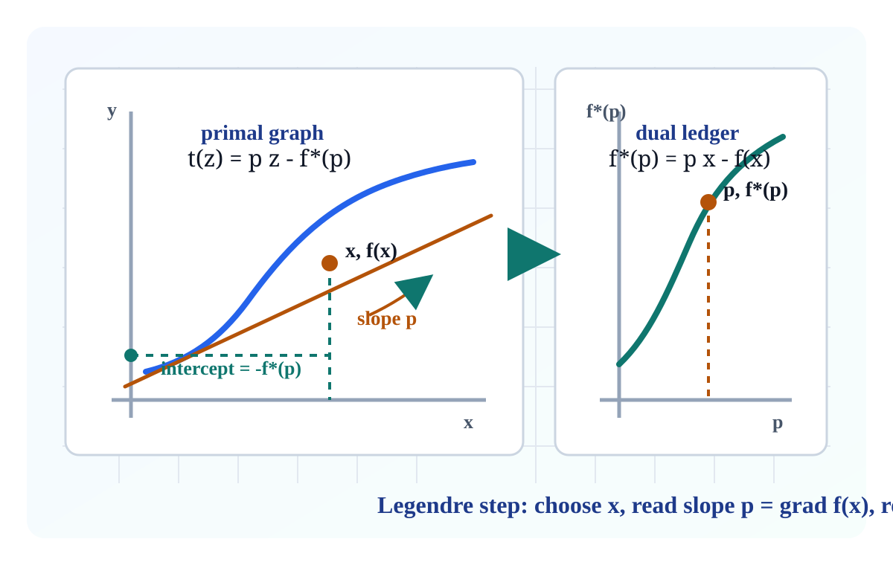
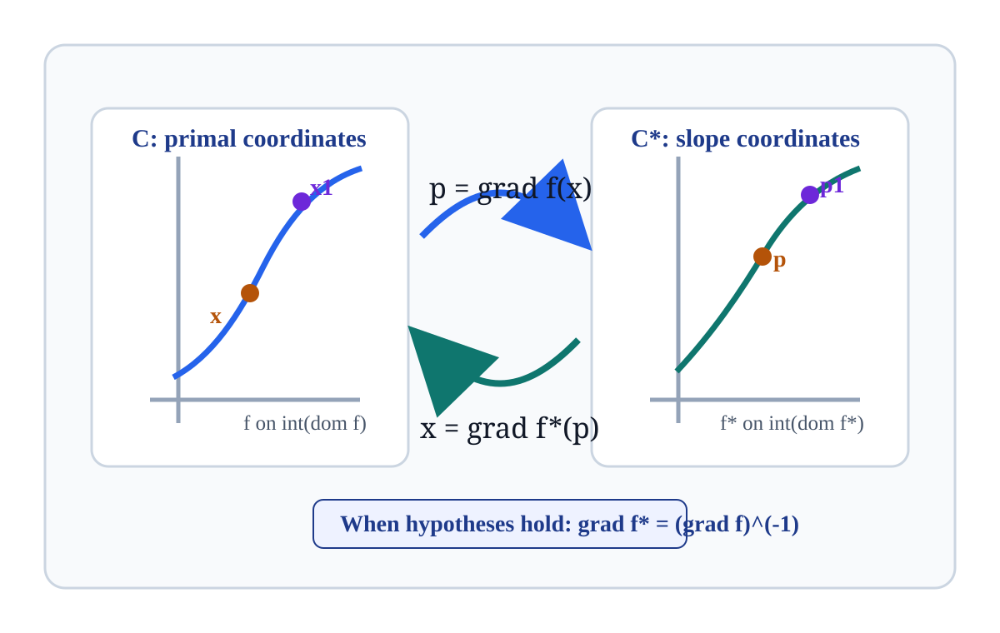
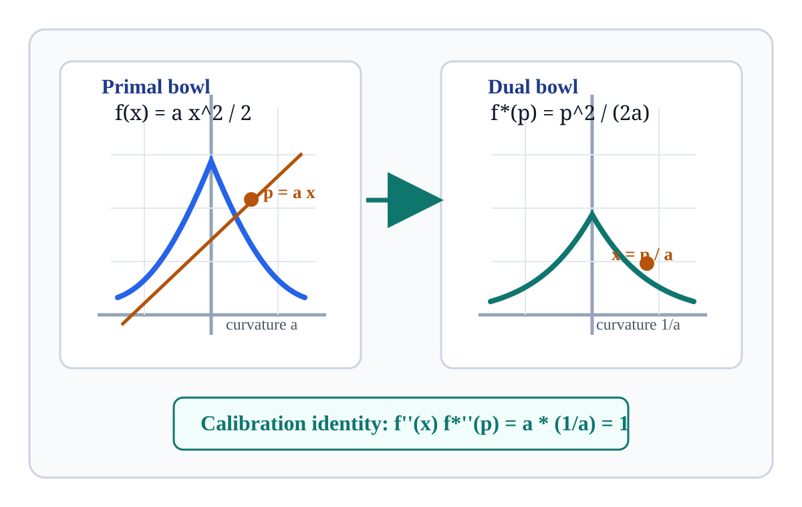

Smooth conjugacy becomes a change of coordinates: replace a primal point \(x\) by its slope \(p=\nabla f(x)\), then read the conjugate value from the tangent line.
For a differentiable convex function on an open convex set \(C\), set \(D=\nabla f(C)\) and
\[g(p)=\langle x,p\rangle-f(x),\quad p=\nabla f(x).\]
Notebook: Convex-Analysis/part-05-differential-theory/section-26-legendre-transformation/26-legendre-transformation.ipynb

\[x\in C=\operatorname{int}(\operatorname{dom} f)\quad\longmapsto\quad p=\nabla f(x).\]
The slope labels the supporting tangent to the graph at \(x\).
In this section, the subdifferential map \(\partial f\) becomes the gradient map exactly when the function is essentially smooth.
If \(p=\nabla f(x)\), then the tangent line is
\[t(z)=f(x)+\langle p,z-x\rangle=\langle p,z\rangle-f^*(p).\]
\[f^*(p)=\langle p,x\rangle-f(x).\]
The intercept of the supporting affine function is \(-f^*(p)\).
\[f(x)+f^*(p)-\langle p,x\rangle=0\quad\Longleftrightarrow\quad p\in\partial f(x).\]
For a closed proper convex \(f\) differentiable on \(C\), the Legendre conjugate is the restriction of \(f^*\) to the gradient image \(D=\nabla f(C)\).
When the inverse \((\nabla f)^{-1}\) is hard to write, \(x\mapsto(\nabla f(x), f^*(\nabla f(x)))\) still parameterizes the dual graph.
For closed proper convex \(f\), the mapping \(\partial f\) is single-valued exactly when \(f\) is essentially smooth.
\[ \partial f(x)= \begin{cases} \{\nabla f(x)\}, & x\in \operatorname{int}(\operatorname{dom} f),\\ \varnothing, & x\notin \operatorname{int}(\operatorname{dom} f). \end{cases} \]
As \(x_i\) approaches a boundary point from inside, \(\|\nabla f(x_i)\|\to\infty\). Boundary subgradients disappear.

When \(f\) and \(f^*\) have the matching smooth and strict-convex behavior,
\[\nabla f:C\to C^*,\qquad \nabla f^*:C^*\to C\]
are continuous inverse maps.
\[\nabla f^*(\nabla f(x))=x,\qquad \nabla f(\nabla f^*(p))=p.\]
This is the smooth-conjugacy version of \(\partial f^*=(\partial f)^{-1}\).

\[ p=f'(x)=2x,\qquad x=\frac{p}{2},\qquad f^*(p)=px-f(x)=\frac{p^2}{4}. \]
\[x^2+\frac{p^2}{4}-px=\left(x-\frac p2\right)^2\ge 0.\]
Equality holds exactly when \(p=2x\), so the tangent and the conjugate ledger agree.
\[ f(x)=x\log x,\quad x>0 \]
\[ p=\log x+1,\quad x=e^{p-1} \]
\[ f^*(p)=e^{p-1},\quad p\in\mathbb R. \]
\[ f(x)=-\log x,\quad x>0 \]
\[ p=-1/x,\quad x=-1/p \]
\[ f^*(p)=-1-\log(-p),\quad p<0. \]
If \(p=\nabla f(x)\) and \(x=\nabla f^*(p)\), then
\[\nabla^2 f^*(p)=\big(\nabla^2 f(x)\big)^{-1}.\]
\[f''(x)\,(f^*)''(p)=1.\]
A steep primal graph produces a shallow conjugate graph at the paired slope.
Check data stored in assets/hessian-reciprocity.json.
| model | \(H_f\) | \(H_{f^*}\) | product |
|---|---|---|---|
| quadratic \(x^2\) | 2 | 0.5 | 1.0 |
| entropy \(x\log x\) at \(x=2\) | 0.5 | 2 | 1.0 |
| barrier \(-\log x\) at \(x=0.5\) | 4 | 0.25 | 1.0 |
The Legendre conjugate first lives on \(D=\nabla f(C)\). The ordinary conjugate \(f^*\) may be larger: it includes boundary values and \(+\infty\) outside its effective domain.
For essentially smooth \(f\), the gradient range satisfies
\[\operatorname{ri}(\operatorname{dom} f^*)\subset D\subset \operatorname{dom} f^*.\]
Without the hypotheses, the gradient image can fail to be the clean open convex coordinate domain that a classical Legendre transform expects.
\[f(x)=x^2,\quad f^*(p)=p^2/4,\quad p=2x.\]
Check file: assets/legendre-lab-checks.json.
| x | p | f(x) | f*(p) | px | gap |
|---|---|---|---|---|---|
| -1.5 | -3.0 | 2.25 | 2.25 | 4.50 | 0.00 |
| -0.5 | -1.0 | 0.25 | 0.25 | 0.50 | 0.00 |
| 0.75 | 1.5 | 0.5625 | 0.5625 | 1.125 | 0.00 |
| 1.00 | 0.0 | 1.00 | 0.00 | 0.00 | 1.00 |
Every row should explain whether \(p\) is the slope at \(x\). The arithmetic is a test of the geometry.
\(\partial f\) is single-valued exactly when \(f\) is essentially smooth.
Inside the domain this means \(\partial f(x)=\{\nabla f(x)\}\).
\(f\) is essentially strictly convex exactly when \(f^*\) is essentially smooth.
Strictness on the primal side becomes differentiability on the dual side.
If both interiors satisfy the hypotheses, \(\nabla f\) and \(\nabla f^*\) are inverse homeomorphisms.
The transform is symmetric between \((C,f)\) and \((C^*,f^*)\).
For differentiable finite convex \(f\) on \(\mathbb R^n\), \(\nabla f\) maps onto all of \(\mathbb R^n\) exactly under strict convexity plus co-finiteness.
\[f(x)+f^*(p)=\langle p,x\rangle\]
is the paired-coordinate certificate.
\[\nabla^2 f^*(p)=\big(\nabla^2 f(x)\big)^{-1}\]
at \(p=\nabla f(x)\), when second derivatives exist and are invertible.
Inverting \(p=\nabla f(x)\) gives \(f^*(p)\) on the gradient range. Boundary values of the closed conjugate may require limits.
Once \(g=f^*|_D\) is known on the slope range \(D\), closed convexity determines boundary values by limiting along line segments from the relative interior.
Off the closure of the effective slope domain, the ordinary conjugate takes value \(+\infty\).
\[x\ \xrightarrow{\nabla f}\ p,\qquad f^*(p)=\langle p,x\rangle-f(x).\]
\[f(x)+f^*(p)-\langle p,x\rangle=0.\]
Zero Fenchel gap confirms the tangent support certificate.
\[p\ \xrightarrow{\nabla f^*}\ x,\qquad \nabla^2 f^*(p)=\big(\nabla^2 f(x)\big)^{-1}.\]